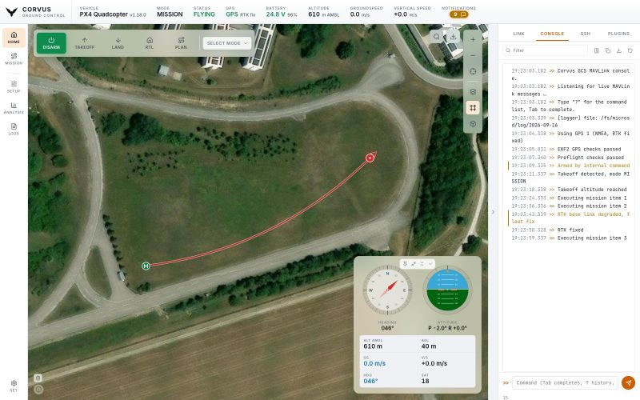
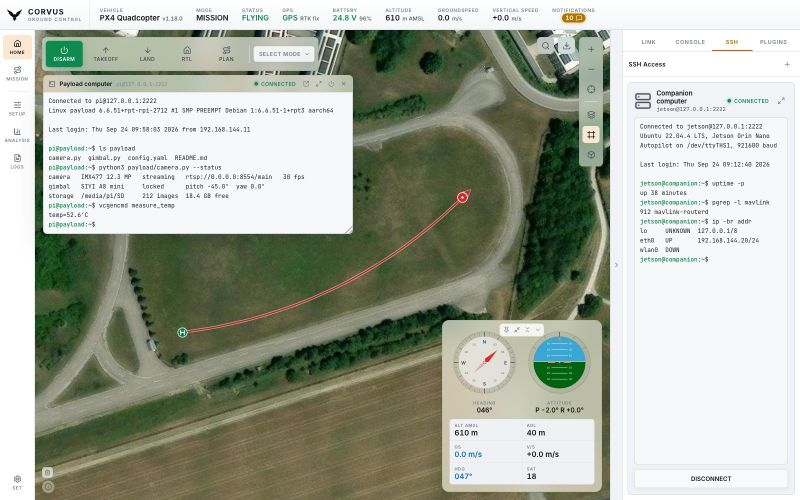

Tools
Console and SSH
A collapsible workspace beside the map holds the tools, so they never replace the operational picture: the MAVLink console, an SSH terminal to the companion computer, and the plugins.


The MAVLink console
Your direct line to the aircraft.
- Filter the live stream by text.
- Read severity from the colour rather than hunting through level buttons: errors red, warnings amber, success green, your own commands in the accent colour, shell replies blue.
- Pause freezes the view while still buffering behind it, so reading one message does not cost you the next fifty.
- Tab completes commands, ↑ walks the history (kept across launches), and
?prints the whole command table. - Copy and Save hand you the visible lines for a bug report. The LOGS page in the left rail exports the whole session's transcript.
Console commands
Corvus's own commands work on both stacks:
| Command | What it does |
|---|---|
help | Ask the backend which commands it accepts. |
arm, disarm | Arm or disarm the vehicle. Arming is still refused unless the autopilot is satisfied. |
mode HOLD | Set a flight mode by name. |
takeoff 10 | Take off to the given height above ground in metres (10 when left out). |
land | Land at the current position. |
rtl | Return to launch. |
The PX4 shell
On PX4 a set of shell commands is passed to NSH, the autopilot's own shell,
over SERIAL_CONTROL, and its answers come back in blue:
| Command | What it does |
|---|---|
listener sensor_combined | Stream a uORB topic. |
top, tasks | Tasks and their CPU load. |
free | Free memory. |
dmesg, boot_log | The boot and kernel log. |
perf | Performance counters. |
hrt | High resolution timer information. |
shell <command> | Send any other NSH command exactly as typed, case included, for example shell param show MPC_*. |
ArduPilot has no such shell. On an ArduPilot link these commands are left
out of ? and of Tab completion, and typing one anyway is answered
with a sentence saying why.
SSH terminal


A real terminal into an onboard companion computer, not a command box.
Every keystroke goes straight to the remote shell, so top,
vim, sudo password prompts, colour output and
Ctrl+C all behave as in any other terminal, and the
prompt you see is the machine's own. The remote side is told the terminal's
actual size.
Full screen and pop-out
The panel is only a few hundred pixels wide, so there is a full screen button next to the connection name (Shift+Esc leaves it; plain Esc belongs to whatever is running), and a pop-out button beside it that opens the same session in a terminal window of its own. Both show one shell: what you type in either reaches it, what it prints appears in both, and it lays itself out for the one you are typing in.
Saved connections
Connections are saved by name, with password or key file authentication, so reconnecting is one click. Beside each one:
- the arrow connects it if needed and opens it in a terminal window of its own instead of in the tab,
- the pencil edits its address and login, and is where you delete it. Deleting asks first, and closes the session if it is open.
Saved connections are also managed under Settings, SSH Connections, and are what the launcher plugins use to start programs. How host keys are checked is described under Network and security.